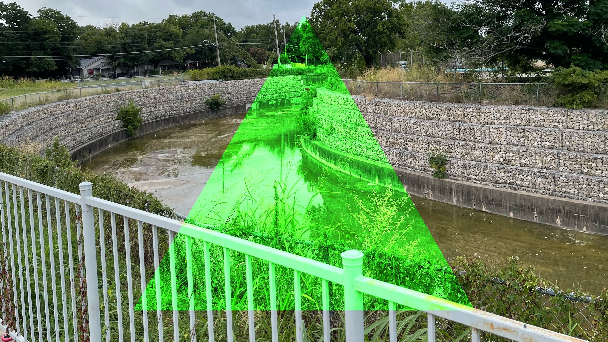

|  |
ReLeaf and Upcycled Computers: Revolutionizing Urban Agriculture in Austin, Texas SolarPunk Fiction by bryceb
ReLeaf's Vertical Gardens: An Affordable and Sustainable Alternative to Expensive Hedge Walls Article by bryceb
ReLeaf and the Future Article by bryceb
Trash Magic: The Eco Revolution of Austin's Cityscape SolarPunk Fiction by bryceb
A Healing Path: iMacs, Upcycling and the Unexpected Joy in Trauma Centers SolarPunk Fiction by bryceb